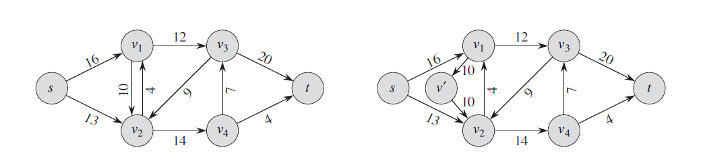
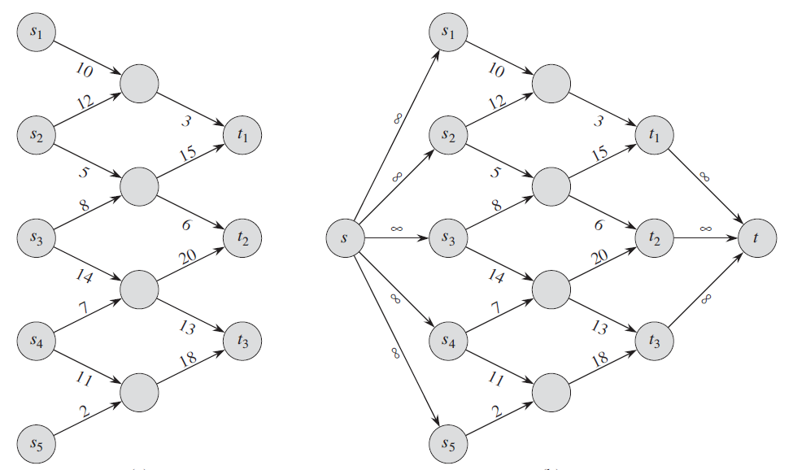
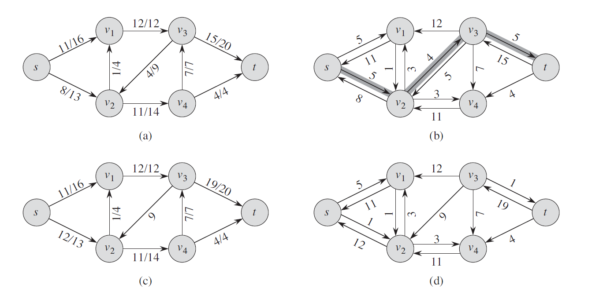

This problem involves solving the equivalent maximum flow problem. We can use Ford–Fulkerson algorithm with BFS to calculate the total flow.
Maximum flow problem
We can use a directed graph as a flow network where the source produces the elements at some rate and the sink consumes the material at the same rate.
Definition
We define a flow network $G = (V, E)$ as a directed graph in which each edge $(u, y) \in E$ has a nonnegative capacity $c(u, v) \ge 0$ and there is not an edge $(v, u)$ in the reverse direction. We distinguish two vertices in a flow network: a source s and a sink t, thus for each vertex $v \in V$, the flow network contains a path $ s \rightsquigarrow v \rightsquigarrow t$. A flow in $G$ is a real-valued function $f: V \times V \to R$ that satisfies $0 \le f(u, v) \le c(u, v)$ and flow conservation implies for all $u \in V - \\\\{s, t\\\\}$, $\sum_{v \in V} f(v, u) = \sum_{v \in V} f(u, v)$.
We call the nonegative quantity $f(u, v)$ the flow from vertex $u$ to vertex $v$. When $(u, v) \notin E$, there can be no flow from $u$ to $v$, and $f(u, v) = 0$. The value $|f|$ of a flow $f$ is defined as $|f| = \sum_{v \in V} f(s, v) - \sum_{v \in V} f(v, s)$. In the maximum-flow problem, we are given a flow network $G$ with source $s$ and sink $t$, and we wish to find a flow of maximum value.
Transformation
We call the two edges $(v_1, v_2)$ and $(v_2, v_1)$ antiparallel. And if we wish model a flow problem with antiparallel edges, we must transform the network into an equivalent one containing without antiparallel edges by adding a new vertex $v^\prime$ and replacing edege $(v_1, v_2)$ with the pair of edges $(v_1, v^\prime)$ and $(v^\prime, v_2)$.

When there are several sources and sinks, we can reduce the problem to an ordinary maximum flow problem by adding a supersource $s$ and a directed edge $(s, s_i)$ with capacity $c(s, s_i) = \infty$ for each $i=1, 2, …, n$ and a new supersink $t$ and a directed edge $(t_i, t)$ with capacity $c(t_i, t) = \infty$ for each $i = 1, 2, .., n$.

Residual Network
Given a flow network $G = (V, E)$ with source $s$ and sink $t$ and a flow $f$, the residual network $G_{f}$ consists of residual edges with capacities $c_{f}(u, v)$
$$
c_{f}(u, v) =
\begin{cases}
c(u, v) - f(u, v) & \text{ if } (u, v) \in E\\\\
f(v, u) & \text{ if } (v, u) \in E\\\\
0 & \text{otherwise}\\\\
\end{cases}
$$

Augmenting Paths
Given a flow network $G = (V, E)$ and a flow $f$, an augmenting path $p$ is a simple path from $s$ to $t$ in the residual network $G_{f}$. We call the maximum amount by which we can increase the flow on each edge in an augmenting path $p$ the residual capacity of $p$, given by $c_f(p) = \min{ \\\\{ c_f(u, v) : (u, v) \text{ is on } p \\\\} }$.
The Ford Fulkerson Method
The Ford-Fulkerson method is a greedy algorithm that iteratively increases the value of the flow. At each iteration.
Given a network $G = (V, E)$ with flow capacity $c$, a source node $s$ and a sink node $t$
- $f \leftarrow 0$
- $f(u, v) \leftarrow 0$ for all edges $(u, v) \in E$
- while there exists an augmenting path $p$
- Find $c_f(p)$
- $f \leftarrow f + c_f(p)$
- for each edge $(u, v) \in p$
- if $(u, v) \in E$
- $f(u, v) \leftarrow f(u, v) + c_f(p)$
- else
- $f(v, u) \leftarrow f(v, u) - c_f(p)$
- if $(u, v) \in E$
- return $f$
Reference
- Introduction to Algorithms, pages 708~730
- Ford–Fulkerson algorithm
- GeeksforGeeks: Ford-Fulkerson Algorithm for Maximum Flow Problem
- Edmonds Karp Algorithm for Max-Flow
- Google Foobar Round 4
- 4.2_escape_pods.py
- Google foo.bar 面试记